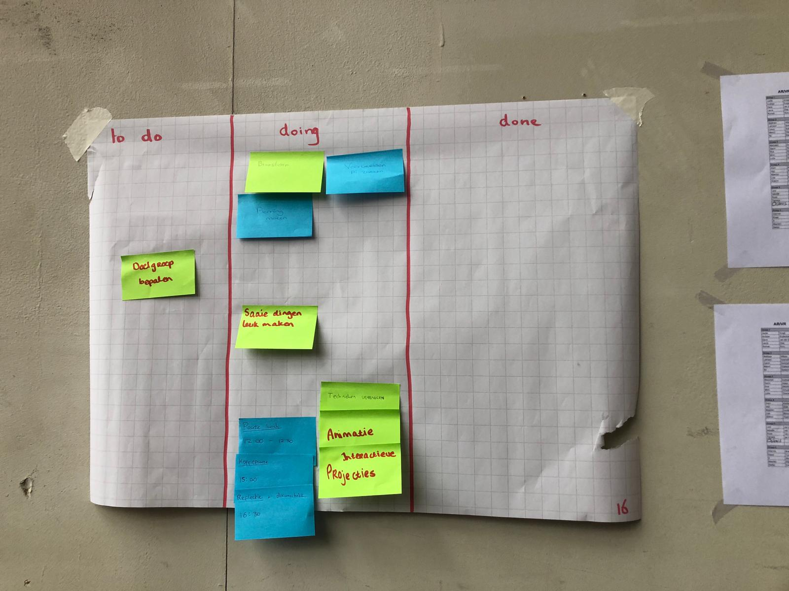
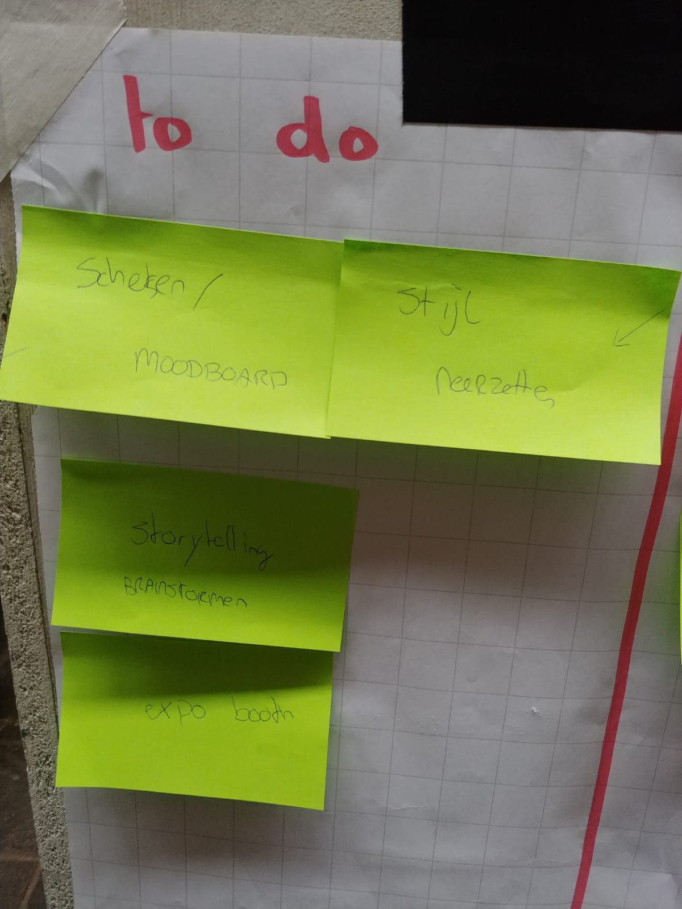

Ik ben Kyan Wies en volg het vak HCI. Mijn verwachting voor dit vak is dat ik versteld zal staan van wat ik allemaal zelf kan bouwen. Ik hoop te leren hoe ik verschillende manieren van interactie aantrekkelijk kan maken. Hieronder zijn al mijn stappen van dit vak te vinden.
Topics
Alle assignments, researches en reflecties van 4 topics (wearables, playful interactions, artificial creatures en ar&vr).
Wearables
Hieronder staat alles over de colleges die zijn gegeven over wearables.
Assignment
Op dit moment zijn tattoos er vooral voor het versieren van het lichaam, maar in de toekomst kunnen er wellicht zogenaamde 'smart tattoos' op de markt komen. Dit zijn tattoos die een boodschap kunnen overbrengen via touch, nfc, bluetooth of andere sensoren. Via de tattoo kan er dan worden gecommuniceerd zonder iets te zeggen. Dit kan handig zijn op verschillende momenten en in verschillende situaties.
De situatie waar ik het meest aan moet denken is het feesten op een festival. Op een festival heerst geen taboe op tattoos en is het niet meer dan normaal om je wat uitbundiger te kleden en je lichaam te versieren. Ook is er in negen van de tien gevallen een band of artiest aan het spelen die een onwijs hard geluid produceert. Het horen van elkaar is wel eens een uitdaging. Een smart tattoo kan de oplossing zijn voor veel van dit soort kleine ongemakken.
Aangezien de tattoo op / in de huid zit, kan het goed de activiteit van de huid meten. Hierbij kan het gaan om de temperatuur, vochtigheid of roodheid. De tattoo kan hier goed op inspelen door te laten weten dat het verkoeling, rust, water, zonnebrand of schaduw nodig heeft. De informatie kan worden doorgestuurd naar de gebruiker zelf, zodat hij of zij kan zien wat de huid en het lichaam op dat moment het hardst nodig hebben. Daarnaast zou een ander via bluetooth, nfc of een code om te scannen ook kunnen zien wat de persoon nodig heeft. Dit is vooral handig als je helemaal los gaat op je favoriete muziek en niet zo goed let op je lichaam.
Om de brug wat minder groot te maken voor het nemen van een tattoo, kan er natuurlijk worden gekozen voor een tijdelijke tattoo die niet in, maar op de huid gaat. Een goed idee zou zijn dat er op het festival een kraam te vinden is die de smart tattoos plaatst in wat voor vorm of maat je ook wil. Het hoeft dus niet duidelijk te onderscheiden zijn van een echte 'domme' (plak)tattoo.
Hieronder staat een foto van typische festivaltattoos waar goed een sensor in verwerkt zou kunnen worden.
Research
Na wat verder te speuren over smart tattoos kwam ik deze site van Microsoft tegen. De site laat een video zien waarin Microsoft bezig is met het implementeren van slimme plaktattoos. Ze worden nu vooral toegepast om controllers te vervangen. De tv bedienen met je arm is niet iets wat me nu per se heel enthousiast maakt, maar dit betekent wel dat er ruimte is voor verbetering.
Reflectie
Wearables zijn erg interessant. Zeker ook omdat de technologie niet of nauwelijks zichtbaar is. Ze worden goed verstopt in de items die we al gebruiken. Ik heb vaak wel het idee dat de wearables nog niet zo veel toevoegen. Bij bijvoorbeeld playful interactions of AR en VR lijkt de focus meer te liggen op wat er nu precies verbeterd kan worden in verschillende gebieden en situaties. Naar mijn mening is dat bij wearables nog niet het geval. Het geeft echter wel veel ruimte om hierin te groeien.
Playful interactions
Hieronder staat alles over de colleges die zijn gegeven over playful interactions.
Assignment
Playful interfaces kunnen goed worden ingezet bij het stimuleren van gewenst gedrag. De interface zorgt ervoor dat de aandacht van de taak zelf wordt weggenomen en wordt ingeruild voor een leuke ervaring.
In het hoofdgebouw van de Haagse Hogeschool zou dit ook op meerdere manieren kunnen worden toegepast. Vaak valt het me op dat het over de hele school druk is, maar waar de meeste rust wordt gevonden is in het trappenhuis. Het lijkt erop alsof niemand de trap neemt. Met de hulp van playful interfaces zou dit kunnen veranderen.
Er zou een systeem kunnen worden ingebouwd zodat het de tijd waarneemt waarmee je op de plaats van bestemming komt. Een touch-interface naast elke deur kan worden gebruikt om te selecteren hoe lang je race duurt. Wanneer je vanaf de eerste verdieping naar de 4e moet lopen, kun je op 4 klikken. De tijd gaat dan over 5 seconden in en dan is het de bedoeling zo hard mogelijk naar de 4e te rennen. Eenmaal aangekomen bij de 4e klik je op het scherm zodat de tijd stopt. Je ziet dan je tijd in beeld en je positie vergeleken met alle andere studenten (en leraren natuurlijk). Voor elke afstand is er een ander scorebord.
Een toevoeging bij dit idee zou kunnen zijn dat je je e-mailadres achterlaat, zodat je aan het eind van de maand geïnformeerd kan worden op welke plek je met je snelste tijd bent geëindigd. Ook zou er een top 3 (of alleen een winnaar) van vorige maanden en een all time fastest op het display kunnen worden weergegeven. Ter compensatie van de winst zou de winnaar misschien een gratis koffie kunnen halen bij de food court of een automaat.
Het is dus in feite de bedoeling dat er alleen gespeeld wordt, maar via de interface strijd je tegen de hele school. Doordat de activiteit bestaat uit rennen, heeft het te maken met een parallelle actie. Je zult voor de interface je naam moeten noemen, zodat je een plek op het scorebord krijgt. Ook zul je op elke trede moeten stappen om te meten of je wel echt de trap op loopt en niet stiekem een vriend op de 8e de interface laat gebruiken. Op elke verdieping zal de display de timer laten zien, zodat je onderweg een indicatie hebt van hoe lang je bezig bent. Daarnaast wordt er gebruik gemaakt van geluid. Er wordt afgeteld voor de start, een tikkende klok afgespeeld in het heetst van de strijd en een applaus afgespeeld bij het einde.
Research
Een variatie van wat bij de assignment staat kan ook worden gevonden op youtube. Hier wordt een zogenaamde doodle jump stairs uitgelicht. Het is de bedoeling om alleen op een kleur te stappen. De kleuren zijn verdeeld over de trap, zodat het wat meer moeite kost om de trap op te komen. Er zijn twee kleuren, dus je kunt tegen of met iemand anders de trap oplopen. Er is in principe geen sprake van technologie, maar dit zou gemakkelijk kunnen worden geïmplementeerd, door bijvoorbeeld het gebruik van geluid wanneer je op een kleur stapt. De actie is parallel en speelt in op knowing.
Reflectie
Dit onderwerp is heel interessant, omdat het zo krachtig is. Met een paar simpele dingen kun je de acties van mensen veranderen, zonder dat ze zich daar gedwongen door voelen. Ik vraag me af wat er allemaal wel niet mogelijk is met deze tak van technologie. Ik hoop dit later vaak terug te zien in taken die mensen nu als langdradig, vervelend, onnodig of saai ervaren, zodat we straks allemaal bezig zijn met iets goeds dat ook nog eens leuk is om te doen. Het onderwerp is wat ik ervan heb bedacht, maar toch werd ik positief verrast.
Artificial creatures
Hieronder staat alles over de colleges die zijn gegeven over artificial creatures.
Assignment
Een artificial creature is een stuk technologie dat een homeostase handhaaft. Dat wil zeggen dat het ervoor zorgt dat het zichzelf levend houdt. Het houdt een balans in stand. Voor dit assignment moest ik een bepaalde homeostase bedenken voor een attribuut.
Het attribuut waar ik de instandhouding voor bedenk is een fiets. Een fiets heeft slechts 1 primaire functie: het vervoeren van de bestuurder. Dit gaat via trappers, een ketting, twee wielen en een stuur. Een Nederlandse fiets heeft het zwaar te verduren. Tijdens het rijden wordt er veel kracht geleverd op de trappers. Dit vraagt om de nodige stevigheid van de trappers, trapas en het frame. Daarnaast moet de ketting goed strak staan en goed geolied zijn om optimaal te kunnen functioneren. De wielen worden aangedraaid door de tandwielen en door de banden worden ze beschermd tegen alle ondergronden. Ook als de fiets stilstaat is het niet in optimale bescherming. De Nederlandse regen zorgt er namelijk voor dat flink wat fietsen worden voorzien van een laag roest. Hoe zou de fiets zich voelen?
Waarschijnlijk voelt je trouwe tweewieler zich prima! Hij wordt gebruikt voor het juiste doeleind. Het is echter wel een slim plan om af en toe wat liefde te verschaffen. Dit kan gelukkig op veel verschillende manieren. Je fiets zal goed aangeven wat hij nodig heeft.
Een beetje vuil is niet erg. Echter, het is niet handig als dit tussen de ketting komt. De fiets zal dan luidkeels protesteren en de bekende ratel of piep zal te horen zijn. Een simpel doekje en wat smeerolie doen vaak wonderen.
Wanneer je fiets lege of lekke banden heeft, zal hij dit laten weten door te schoppen. Je zal dan elke kiezel voelen. Dit is het teken dat je banden meer lucht nodig hebben. Als de banden lek zijn, zal de fiets snel harder schoppen dan wanneer de banden langzaam leger raken.
De remkabels van de fiets zijn de letterlijke gevoelige snaren van de fiets. Wanneer de remkabels van de fiets kapot zijn, zal hij je negeren als je probeert te remmen.
Het komt er dus op neer dat je fiets zich niet zomaar tegen je zal keren als je 'm eens in de tijd goed verwent!
Research
Een interessant concept dat al een stuk bekender wordt in Nederland is de zorgrobot. Dit is een robot die wordt ingezet tegen eenzaamheid of voor bevordering van zorg van ouderen. Een van die concepten kan worden gezien in de documentaire "Ik ben Alice". In deze documentaire is te zien dat de robot Alice een gesprek houdt met ouderen. Ze verkrijgt informatie via sensoren en kan deze informatie opslaan om er op een later moment weer op terug te komen. Echter zitten er nog steeds elementen in die ervoor zorgen dat dit wezen duidelijk geprogrammeerd is en niet helemaal voor zichzelf denkt. Wanneer Alice het antwoord "ja" krijgt op de vraag of de oudere wel eens eenzaam is, reageert ze met "dat is jammer". Niet echt empathisch. Toch ervaren ouderen het als een leuke toevoeging in de zorg. Dat is genoeg om te zeggen dat artificial creatures wel degelijk meerwaarde hebben.
Reflectie
Als ik denk aan hoe technologie echt eng kan zijn, denk ik aan artificial creatures. Het feit dat we robots en andere wezens kunnen bouwen die voor zichzelf kunnen denken is een rare gedachte. Tegelijkertijd is het een van de meest interessante ontwikkelingen. Met wat meer tijd en aandacht kunnen hier hele nuttige machines uit ontstaan. Je kunt ze zeggen hoe ze iets moeten doen en je hebt er vervolgens geen omkijken meer naar. In bijvoorbeeld de auto-industrie zijn robotarmen een waardevolle toevoeging voor het produceren van een grotere oplage. Omdat de mogelijkheden veel te bieden hebben, vind ik het onderwerp heel interessant, maar ook een beetje eng...
AR & VR
Hieronder staat alles over de colleges die zijn gegeven over augmented en virtual reality.
Assignments
Augmented en virtual reality zijn begrippen waarvan de mogelijkheden bijna oneindig zijn. Er is nog veel te ontdekken en toe te passen op dit gebied. Het kan worden toegepast voor verschillende doeleinden en in verschillende situaties.
Een van die situaties kan bij je auto zijn. Veel mensen hebben de droom om ooit in een super- of hypercar te rijden. Helaas is het erg duur om zo'n auto te kopen of te huren. Daarnaast hebben mensen niet altijd de tijd om een dag te reserveren voor het rijden van zo'n auto. De oplossing is simpel: augmented reality! Voeg met een app bodykits, spoilers, grote velgen, een wit leren interieur, sportstuur en een nieuw kleurtje toe aan je auto en hij ziet eruit als een supersnelle bolide. Met augmented reality in bijvoorbeeld een bril of een lens is het nog steeds mogelijk om de echte wereld te zien, zodat het gebruik van je nieuwe asfaltvreter niet voor onveilige situaties zorgt. Daarnaast is het ook mogelijk om volledig aangepaste auto's op de snelweg langs te zien rijden. Zo wordt autorijden weer leuk, zelfs in je Fiat Panda uit '98.
Een andere manier van augmented reality kan worden toegepast in een stadion. Het is, zeker wanneer je helemaal bovenaan zit, erg lastig om precies te zien wie waar staat in bijvoorbeeld een voetbalwedstrijd. Met de hulp van een mobiel of ander device zou je kunnen zien wie waar staat. Ook zou het de mogelijkheid kunnen geven op de speler te klikken en meer informatie en statistieken te zien. Het is een goede manier om meer waarde te halen uit de bovenste rij stoelen zonder de ervaring van het zitten bij een wedstrijd te verliezen.
Nog een manier kan worden gevonden in ziekenhuizen. Van chemotherapie is bekend dat het een vreselijke ervaring is. Het wachten tot de behandeling klaar is, is geen fijn idee. VR kan hierbij helpen door via een koptelefoon en een Gear VR bril je te laten denken dat je ergens anders bent of iets anders meemaakt. Dit kan varieren van een helikoptervlucht of skydive tot het zonnen aan het water in spanje.
Research
Er bestaat een sport in Maleisië die erg lijkt op trefbal. Er is alleen geen bal te vinden. Alles wordt gesynchroniseerd via AR. Het doel is elkaar af te gooien met lichtgevende energieballen. Een bal kan worden ontweken of tegengehouden met een augmented schild.
Het concept is erg interessant, omdat het nog steeds inspeelt op de fysieke vaardigheden en het reactievermogen van de spelers. Echter is het gewone trefbal naar een hoger niveau getild en is het veel meer meeslepend. Er zijn inmiddels veel mensen bij betrokken. Er worden bijvoorbeeld toernooien georganiseerd waarbij een zaal vol fans kunnen meemaken hoe de twee teams het tegen elkaar opnemen. De volledige uitleg, regels, filpjes en spelvormen (inclusief monster battles!) zijn op deze site te vinden.
Reflectie
AR en VR zijn erg interessant. Ze kunnen alledaagse, vervelende of saaie taken erg aantrekkelijk en interresant maken. Naar mijn mening ligt de toekomst wat meer richting de augmented reality dan de virtual reality, omdat ik vind dat dit de betere vorm van technologie ververven binnen het echte leven is. Wel denk ik dat AR pas leuk wordt als het levensecht lijkt of een nuttige toevoeging is op het echte leven. Daarnaast moeten er nog ontwikkelingen komen op het gebied van praktijk. Mensen gaan niet lopen met een koelkast op hun gezicht. Pas wanneer het goed kan worden geïmplementeerd in een item dat dagelijks wordt gebruikt door een gebruiker, dan kan het wachten op een grote groei (en mijn geld).
Workshops
Alle assignments van 4 workshops (2x ardiuno, VR environments en computer vision).
Arduino
Hieronder staat alles over de twee workshops die zijn gegeven over arduino. Bij deze workshops is er met de hulp van een klein moederbord, wat lampjes, een motortje en andere kleine componenten een aantal opdrachten gemaakt. Hier werd met code een serie opdrachten verstuurd naar het moederbord, zodat dit bord steeds andere acties vertoonde. Alle opdrachten zijn hieronder te vinden.
Assignments workshop 1
Opdracht 1: Blink
Deze opdracht hield in dat het van belang was om het moederbord goed aan te sluiten op de laptop via een usb-kabel. Als dit goed is gelukt, zou er een lampje knipperen op het moederbord. Het was geen moeilijke opdracht, maar het was wel een belangrijke, omdat er anders onnodige foutjes zouden kunnen ontstaan bij de rest van de opdrachten.
Opdracht 2: Blink - Breadboard
Als het lampje op het moederbord op de correcte manier knippert, kan dit ook met een van de ledlampjes die bij de arduino-kit zit. Als het lampje, twee verbindingsdraadjes en een weerstand (die ervoor zorgt dat het ledlampje niet te veel stroom krijgt) op de goede manier in het breadboard zitten, gaat het lampje om de seconde knipperen. Wanneer de code wordt aangepast kan de snelheid van het knipperen worden veranderd.
Opdracht 3: Blink multiple leds
In deze opdracht werden niet 1, maar 2 ledlampjes aan het werk gezet. Met de hulp van een extra weerstand, extra verbindingsdraadjes en een aanpassing in de code kon dit. Nu konden de lampjes tegelijkertijd knipperen, maar ook om de beurt en in een wisselend tempo. Hieronder staat de code die is gebruikt om het groene lampje twee keer zo snel te laten knipperen als geel.
Opdracht 4: Fade LED - Analog Output
Naast het aan- en uitzetten van ledlampjes, kunnen ze ook gedimd worden. Niet alle pins op het moederbord zijn hiervoor geschikt. De samenstelling is wat aangepast en hierdoor is het mogelijk om de hoeveelheid licht die het lampje uitstraalt te genereren. De ledlampjes kunnen onafhankelijk van elkaar in- en uitfaden. Hieronder staat in code hoe het groene lampje steeds feller wordt, terwijl het gele lampje steeds minder fel wordt.
Opdracht 5: Potmeter value - Analog Input
Bij deze opdracht werd gebruik gemaakt van een draaiknop. De draaiknop moest eerst op de goede manier informatie kunnen geven voordat het ledlampjes kon aansturen. Een apart scherm in Arduino (Serial Monitor) kon de waarden laten zien op het moment dat er aan de knop gedraaid werd.
Opdracht 6: Controlling a LED with a potmeter
Hier werden de lampjes ook daadwerkelijk aangestuurd door de draaiknop. De minimale en maximale waarden van de draaiknop werden zo afgesteld, dat het de minimale en maximale waarden van de ledlampjes zou kunnen reguleren. De ietwat omslachtige code werd veranderd in simpelere taal en het was nu mogelijk om de ene lamp te laten infaden met een draai aan de knop, terwijl de andere bezig was met uitfaden.
Opdracht 7: Control the LED with light
In deze opdracht werd gebruik gemaakt van een andere sensor. Deze sensor is voor avonden buiten heel handig. Het reguleert namelijk de hoeveelheid licht op basis van de hoeveelheid licht het verkrijgt. Is er veel licht, dan zullen de ledlampjes uitstaan. Is er nauwelijks licht, dan schijnen de lampjes juist erg fel. Hier is het echter precies andersom. Weinig licht betekent geen licht van de ledlampjes en veel licht betekent veel ledlicht. Hoe dit is gedaan, staat hieronder in de code.
Opdracht 8: Voltage divider
Hier was de bedoeling dat er werd berekend hoeveel de voltage output zou zijn als de hoeveelheid licht dat binnenkomt in een van de twee (of beide) lichtsensoren zou veranderen. Wanneer de lichtsensoren dezelfde waarde binnenkrijgen, zal de V-out altijd ½ zijn van de V-in. Als ze van waarde verschillen, zullen de lampjes bijna helemaal aan of bijna helemaal uit staan.
Hier staan een aantal van die berekeningen:
Opdracht 9: Arduino and Processing
In opdracht 9 werd er gebruik gemaakt van een ander programma naast Arduino, genaamd Processing. Dit programma kan goed samenwerken met het Arduino bord. Hierbij werd het bord de input en het scherm de output. In de video is te zien wat er gebeurt wanneer de sensor meer en minder licht binnenkrijgt. De code staat erbij.
Opdracht 10: Buttons
Een button kan goed gebruikt worden voor het controleren van een ledlampje. In huizen is hetzelfde principe terug te vinden in de vorm van een lichtschakelaar. Wanneer een extra button wordt toegevoegd om een ledlampje te controleren, kan het circuit ingewikkelder worden. Hieronder staat de code (en een filmpje) waar het lampje aangaat als een van de twee buttons wordt ingedrukt, maar wanneer beide buttons worden vastgehouden, het lampje dooft.
Opdracht 11: Servomotor
De servomotor werd in deze opdracht voor het eerst gebruikt. Deze kan in totaal 160 graden draaien. Ik heb de code op zo'n manier aangepast, dat de motor de cha cha cha danst. In de code staat een paar keer 180, maar dit moet 160 zijn, aangezien dit de maximale draai van de servomotor is.
Opdracht 12: Controlling the servo with inputs
De servomotor kan naast het verkrijgen van inputs via de code ook inputs verkrijgen via een potmeter of een button. Hieronder staan de code en het filmpje van een servo die naar de ene kant draait wanneer er op een knop wordt gedrukt. Ook draait hij naar de andere kant als de andere knop wordt ingedrukt.
Opdracht 13: Sound
Deze laatste opdracht stond in het teken van geluid. Er werd gebruik gemaakt van een speaker die met de hulp van code geluid kon produceren door een trillend plaatje. Ik werd erg enthousiast van het feit dat we muziek konden coderen, omdat ik erg van muziek maken en luisteren houd. Ik heb me dan ook wat verder verdiept dan nodig was en heb Rick Astley's Never Gonna Give You Up kunnen nabootsen.
Tip: zet het geluid aan om gerickrolled te worden.
VR environments
Hieronder staat alles over de workshop die is gegeven over VR environments.
Assignments
Deze opdracht was opgedeeld in twee delen. Het eerste deel ging over projectie op piepschuim. Het andere deel introduceerde ons met Unreal Engine.
Voor het eerste deel werd een programma genaamd Madmapper gebruikt. Dit is software die ervoor zorgt dat projectie kan worden aangepast. Met de hulp van een beamer, een wit bord, piepschuim en shirts heb ik met een groepje gezorgd voor een aantal verschillende vormen van projectie. Door foto's, effecten of filmpjes te importeren of via de eigen library van Madmapper te gebruiken, kon de werkelijkheid worden aangepast. Dat is hieronder te zien.
Het tweede deel ging over Unreal Engine. We moesten oefenen met dit programma, maar dit vereist heel wat van een laptop. Het wachten duurde dus langer dan het werken met het programma zelf, maar er is een draaiende banaan ontstaan.
Computer vision
Hieronder staat alles over de workshop die is gegeven over computer vision.
Introductie
Deze workshop werd opgedeeld in een aantal opdrachten. Er werd gebruik gemaakt van een programma genaamd Processing. Dit is een programma die gebruik maakt van een versimpelde versie van een andere codetaal, genaamd Java. Hieronder staan de opdrachten en de uitwerkingen.
Assignment 1
Voor deze oefening moesten er drie vormen worden gemaakt en in een scherm op de computer tevoorschijn komen. Hieronder staat hoe ik dat heb gedaan.
Assignment 2
Voor deze oefening moesten er niet drie, maar vier vormen worden gemaakt en in een scherm op de computer tevoorschijn komen. Hieronder staat hoe ik dat heb gedaan.
Assignment 3
Hier moesten vormen interactief worden gemaakt. Ik heb cirkels mijn muis laten volgen en de locatie van de muis in het vak bepaalt de kleur. Ze worden ook steeds groter.
Assignment CV1
Bij deze oefening mochten we werken vanuit een voorbeeld. We moesten het voorbeeld op zo'n manier aanpassen, dat er een ronde facetracker ontstond in plaats van een vierkante.
Dit was de code eerst.
Dit is de code nu.
Assignment CV2
Naast tracking kan ook gezichtsherkenning worden gecodeerd. Je kunt dan onderdelen van een gezicht specificeren. Hier zie ik eruit als een dief.
Assignment CV3
In dit voorbeeld heb ik de tracker laten zoeken naar het donkerste punt op het scherm.
AR assignment
De laatste opdracht ging over augmented reality. Met een vormpje op je mobiel kon je processing triggeren en iets laten zien. Hieronder zie je dat het kaartje een blauwe kuibus tevoorschijn tovert.
Excursie
Alle assignments en de reflectie van de excursie naar NEMO in Amsterdam.
Assignments
De excursie werd gehouden in Nemo. We kregen de mogelijkheid hier rond te kijken om inspiratie op te doen voor enkele mogelijkheden van computer interaction. In eerste instantie lijkt niet veel computergestuurd, maar voor veel kleine elementen wordt een computertechniek gebruikt, zoals een beamer, een scherm met touchscreen of een weegschaal. Er waren ook wat opvallendere computergestuurde apparaten, zoals een grote projector die kinderen een spel liet spelen met borden om zo de aarde te redden van invasies en rotsblokken. Het interessantste project in Nemo vond ik een grote bak met heuveltjes. Met de hulp van een projector werd een grote rivier geprojecteerd en met de hulp van kleine zakjes moest je de dijken versterken. Zo kon je ervoor zorgen dat het water niet tussen de gaten van de dijken zou stromen en de dorpen verwoesten. De projector reageerde op de zakjes en wanneer er zo'n zakje werd gedetecteerd ging het water er niet meer doorheen. Het is een hele indrukwekkende manier om kinderen te leren hoe dijken werken, maar het is nog veel indrukwekkender voor een HCI-student van 21!
Op de site van Nemo staat dat 'de strijd tegen water', zoals de stelling wordt genoemd, goed laat zien wat er gebeurt als dorpjes onderstromen. De dorpjes worden opgebouwd zolang ze droog blijven, maar zullen worden vernietigd als het onder water komt te staan.
Het frustrerende is dat ik niet precies weet hoe dit is gedaan. na wat speurwerk kwam ik erachter dat de tafel is gecoat met een laag polyurea. Dit zorgt ervoor dat de tafel lang meegaat en goed reflecteert wat de beamer projecteert. Verder heb ik gevonden dat het bedrijf die het heeft gemaakt Monobanda heet. Andere vergelijkbare projecten hebben me echter wel een goed beeld gegeven van hoe het werkt. Waarschijnlijk wordt er gebruik gemaakt van sensoren die de afstand meten. Deze afstand wordt doorgegeven en daarmee wordt iets in stand of in beweging gezet. Dit project laat dat goed zien.
Ik vind dit interessant omdat er talloze mogelijkheden zijn. De input is in principe heel simpel te meten. De plaats en het hoogteverschil bepalen wat en of er iets gebeurt. Op de site van Monobanda staat ook een project voor mensen met dementie. Ik wordt er heel blij van om te zien dat technologie wordt ingezet voor de goede doeleinden.
Reflectie
Toen ik hoorde dat we met het uitje naar Nemo gingen, was ik niet heel enthousiast. Ik ging daar vroeger heen als kind. Toen vond ik het leuk, maar ik ging er bevooroordeeld heen. Toch wist Nemo me te verbazen. Er zijn genoeg leuke dingen te doen, ook als je geen kind meer bent. De kettingreactie blijft voldoenend werken om naar te kijken. Ook een kamer die je erg klein of erg groot laat lijken door perspectief blijft leuk. Daarnaast waren er veel kleine interactieve elementen die de excursie onverwacht leuk maakten. Uiteindelijk ben ik niet naar huis gegaan met een hoop inspiratie, maar wel met een stevige drijfveer om tijdens de labweken iets moois te maken!
Labweken
Het proces per dag, het eindproduct en de reflectie van de labweken.
Proces
Hieronder staat per dag beschreven wat er in de labweken is behaald.
Dag 1
Dit is de eerste dag dat we aan de slag mochten in Maakhaven. Na een "korte" introductie kregen we te horen wat de groepen waren en welk onderwerp de boventoon zou hebben. Ik kwam terecht met een groep die zich bezig zou houden met Playful Interactions. We hebben een scrumboard gemaakt met een to do, doing en done lijst. Hierop konden we het overzicht bewaren. Daarna zijn we gaan brainstormen. We hebben met elkaar besproken wat we graag willen van dit project en wat we verwachten van het eindconcept. Ook hebben we een groepsWhatsapp aangemaakt voor het delen van foto's van de voortgang en een drivemap voor geschreven content en grotere bestanden. Er werd gewerkt naar 3 concepten. Dit deden we door verschillende sensoren en apparaten te testen, zoals Makey Makey en Leap. We hebben naast het werk ook de afspraak gemaakt dat we een vaste pauze om 12:00 (van een half uur lang) en om 15:00 (van een kwartier lang) inlassen. Uiteindelijk zijn we gestrand bij 3 potentiële concepten: een interactieve vijver, een interactieve vloer met games en een interactieve muur die vuilnis verzamelt.

Dag 2
We waren op het begin van deze dag vastbesloten veel te testen. We wilden kijken hoe we verschillende vormen van technologie in konden zetten en op verschillende manieren konden laten activeren. We hebben bijvoorbeeld gekeken naar de mogelijkheden met licht. Als de lichtsluis wordt onderbroken door bijvoorbeeld iemand die er met zijn hand langs zwaait, gaat er een lichtje branden. Ook hebben we de proximity sensor getest. Dit is de sensor waarbij er iets kan gebeuren als iets of iemand dichtbij genoeg komt. Deze sensor werkt met geluid dat je niet hoort, dus dit is ook een handige sensor voor bijvoorbeeld in het donker. Er kwam een gastspreker langs die zijn geld verdiende met verschillende dingen maken in de online wereld. Hij zat naar eigen zeggen op verschillende stoelen en dit was erg inspirerend. Echter raakten een beetje inspiratieloos van alle mogelijkheden en van iedereen die al druk aan de slag was met hun concept, dus we besloten met zijn allen naar de gamma te lopen voor inspiratie. Toen we langs de wcborstels liepen kregen we ineens een ingeving: we hadden een concept bedacht. Een hele vage, maar er was een startpunt en we werden allemaal enthousiast van het idee: een interactieve wc!
Dag 3
De derde dag was een heel nuttige dag. We waren nog helemaal in extase van ons nieuwe concept. Eerst hebben we ons scrumboard aangepast. Vervolgens kwam er een gastspreker die ons meer vertelde over artificial intelligence en hoe robots leren. Het was interessant, maar het sloeg niet zo veel op ons onderwerp. Vervolgens hebben we bedacht wat voor vormen van interactie er mogelijk waren in een wc. We kwamen op het idee een interactieve mat te maken die te bedienen was met je voeten. Ook hebben we een game bedacht. We willen via een scherm het spel laten zien dat je ook kunt spelen op Google als je geen verbinding hebt. Het is een soort statement tegen het mobiel gebruik op de wc. Eigenlijk is het een paradox, omdat je natuurlijk je mobiel gewoon vervangt voor een andere vorm van technologie. We zijn langs de gamma gegaan om alle materialen uit te zoeken voor het wc-hokje en hebben een planning gemaakt wanneer we willen beginnen met bouwen, kopen, meenemen van power tools en schrijven van code voor de game. We zijn inmiddels al begonnen met het coderen van de game en hebben spuitverf gehaald bij de Action. Ook willen we via marktplaats een oude wc op de kop tikken voor weinig of niets. We zijn ook weer geëindigd met het aanpassen van het scrumboard.

Dag 4
Vandaag is er veel fysiek werk geleverd. Het was een erg productieve dag. We begonnen met de daily standup waar we het scrumboard weer konden aanpassen. Er kwam een gastspreker die wat vertelde over artificial creatures. Hij had twee van zijn creaties meegenomen en gaf als tip mee dat voorwerpen niet op al bestaande levende wezens hoeven te lijken om als levend geassocieerd te worden. Dit vond ik erg interessant. Daarnaast zei hij dat een groot project een goede planning nodig had. Dit is misschien een open deur, maar vaak wordt dat overgeslagen. Ik ben blij dat ons groepje een goede planning heeft gemaakt. Na de gastspreker konden we starten met bouwen. Eerst hebben we inkopen gedaan bij de Gamma, waar we inmiddels vrij bekend zijn, aangezien we er zowat elke dag zijn langsgeweest. We hebben balken en platen gekocht voor het wc-hokje. We hebben alles op maat gezaagd en we zijn verder gegaan aan de code voor het spel. Daarnaast hebben we bedacht hoe we de mat in elkaar gaan zetten. Het wordt een handig systeem met twee pedalen die een knopje indrukken. Ook is er een moodboard gemaakt en een schets van het eindontwerp. Daarnaast hebben we bedacht dat het een leuk idee is om foto's in de wc op te hangen van het proces van het maken. We zijn wel een hindernis tegengekomen. We hadden bedacht spuitverf te gebruiken voor de platen, aangezien de platen niet tegen water kunnen en spuitverf niet op waterbasis is. Dit pakte echter niet. De volgende dag zullen we het proberen met normale verf en kwasten.
Op het einde van de dag hebben we in de buurt een wc weten te vinden die we mee mochten nemen!
Dag 5
Deze dag hebben we zeer nuttig gebruikt. Eerst hebben we tijdens de daily standup besloten wat we gaan doen en of de planning nog klopt. Na dit gedaan te hebben was de gastspreker Marcello er om over playful interactions te vertellen. Hij zei dat playful interaction niet altijd kan en hoeft te werken voor iedereen. Daarnaast is het noodzakelijk om de context in de gaten te houden. Dit was goed toe te passen op ons wc-idee. Vervolgens zijn we verder gegaan aan de game: hij is af! We hebben het bord met pedalen gemaakt, zodat je het spel met je voeten kunt bedienen. De arduino is vastgesoldeerd aan de knopjes die de input krijgen. Het idee is om een mat over de pedalen te leggen, zodat het lijkt alsof de mat interactief is. Verder hebben we alle platen en balken geverfd, zodat het meer een uitstraling van een toilet krijgt. Toen dit gedaan was, is er een moodboard gemaakt voor het interieur van het gebouwtje. Verder is er nog een logo gemaakt voor naast de wc. Ook is het idee er om verwijsbordjes te maken naar waar we staan.
Dag 6
Deze dag was een bouwdag. Al het hout en al het plaatwerk is in elkaar geschroefd. Er zijn wandplankjes gezaagd en het kwam allemaal heel duidelijk tot een mooi geheel. We hebben het spel afgespeeld via een laptop en dit werkte. Het concept is uitgewerkt! Het is nu van belang dat het de mooie afwerking krijgt die het verdient. We hebben alvast een begin gemaakt door een mat te kopen om de pedalen mee af te dekken. Het plan is om geurstokjes, kaarsjes en andere versieringen mee te nemen. Ook willen we een scorebord ophangen. Daar omheen willen we foto's van het proces ophangen.
Dag 7
Dit was een dag waar we al een beetje naar het einde toe werkten. We hebben inmiddels ook een naam voor het projectgroepje: de ardino's, een verwijzing naar het brein van het systeem (arduino) en het dinospel. Er zijn ook plannen gemaakt om een film te kijken als alles af is. We hebben wat spullen van thuis meegenomen die in het hokje kunnen komen. Ook hebben we het scherm bevestigd. We missen echter nog een VGA naar HDMI verbinding, dus morgen hopen we het scherm aan de praat te krijgen. Verder zijn we aan het proberen om ledlampjes toe te voegen aan de interactieve wc. Die willen we achter het scherm doen en laten reageren op acties van het spel. We hebben daarnaast de mat aangepast om te laten zien waar je voeten moeten worden geplaatst. Als laatst hebben we het spel wat meer gepersonaliseerd, zodat het duidelijk wordt dat we die zelf hebben gecodeerd in plaats van "gewoon gebruikt". Ook zijn we naar de action geweest om nog meer spullen te halen voor de wc, zoals een luchtverfrisser en een wc-rolhouder. Daarnaast is het scrumboard aangepast en komt het einde daar ook langzaam in zicht.
Dag 8
We hebben foto's van het proces af laten drukken en opgehangen in het hokje. Ook hebben we krijttape opgehangen om de highscore te laten zien. Er ontbrak nog een kabel en die is deze dag gehaald. Het scherm werkt nu en is om die reden bevestigd aan de muur. De kabels zijn weggewerkt met twee gaten in de plaat. Ook wordt er gebruik gemaakt van een draadloze speaker in de wc. We wisten eerst niet welke plek de speaker kreeg, maar het was een leuk idee om deze in de wc te leggen, aangezien de geluidjes ook wat trilden. We hadden daarnaast een idee om ledlichtjes te plaatsen achter de tv. Deze wilden we laten reageren op acties in het spel, maar hier is helaas te weinig tijd voor. We hebben dit dus moeten laten zitten. Als laatst zijn er wat aanpassingen aan het spel gemaakt. Er is nu om de 500 punten een discofunctie voor 100 punten lang. Ook is er een kans van 20% dat je kan spelen als Chris Heydra (docent) in plaats van de dino. Verder hebben we een tafeltje neergezet met schaaltjes vol snoepjes, een luchtverfrisser en een beetje geld. Het project is er nu een om erg trots op te zijn!
Dag 9
De laatste dag was de dag van de excursie. Omdat ons project zo goed als af was en er te weinig tijd (en te veel onzekerheid) was om nieuwe elementen toe te voegen, besloten we later naar de locatie te gaan. Dit werd echter niet gewaardeerd, dus we hebben ons vervolgens erg nuttig gemaakt met een bezem. Na het vegen (en andere kleine klusjes voor de voorbereiding van de expositie) was het tijd: zo trots als een pauw stonden we naast onze Play Pot. Hij was erg in trek bij de kinderen van Joël (docent), maar ook volwassenen en docenten vonden het leuk!
Na de expo was het tijd om alles af te breken. Dit was helaas erg snel gebeurd. De Play Pot was een ervaring om nooit te vergeten!
Product
Alles voor de code is hier te vinden. Het uiterlijk van de wc is het beste te zien bij dag 9.
Reflectie
Deze twee weken waren fantastisch. Het begon erg moeizaam met het bedenken van een concept, maar nadat we het helemaal voor ons zagen ging alles op de automatische piloot en vlogen de dagen voorbij. Het is leuk om veel met je handen te doen. Ook is het gaaf om vanaf papier iets echts te maken dat ook nog eens zo leuk is om te spelen. Ik had aan het begin mijn twijfels of het wel genoeg was, omdat de enige input in principe twee knopjes zijn. Gelukkig waren er veel mensen die zeiden dat ze het juist fijn vonden dat ze zo weinig zagen van de technologie en gewoon een spelletje konden spelen dat goed werkte. Veel feedback kregen we op de wc als locatie. Ze wilden het allemaal thuis hebben en mensen van de Maakhaven vroegen zich af waarom ze het nog niet thuis hebben geïnstalleerd. Ik heb ook heerlijk samengewerkt met de groep. We waren het vaak met elkaar eens en er was een sterke rolverdeling die heel goed werkte. Iedereen heeft in principe alles gedaan, maar er waren taken verdeeld. Ik kreeg de leiding over de bouw van het hokje. Sjoerd kreeg de code in zijn handen gedrukt. Djenna en Anne hadden het vooral voor het zeggen bij het interieur. Mirthe hield zich het meest bezig met de installatie en werking van de arduino en het bord met de pedalen. We hielpen elkaar met alle taken en vulden elkaar waar nodig aan met tips en nieuwe elementen. Aan het einde vond ik het gewoon jammer dat het voorbij was, maar uitslapen heeft ook zo zijn voordelen!